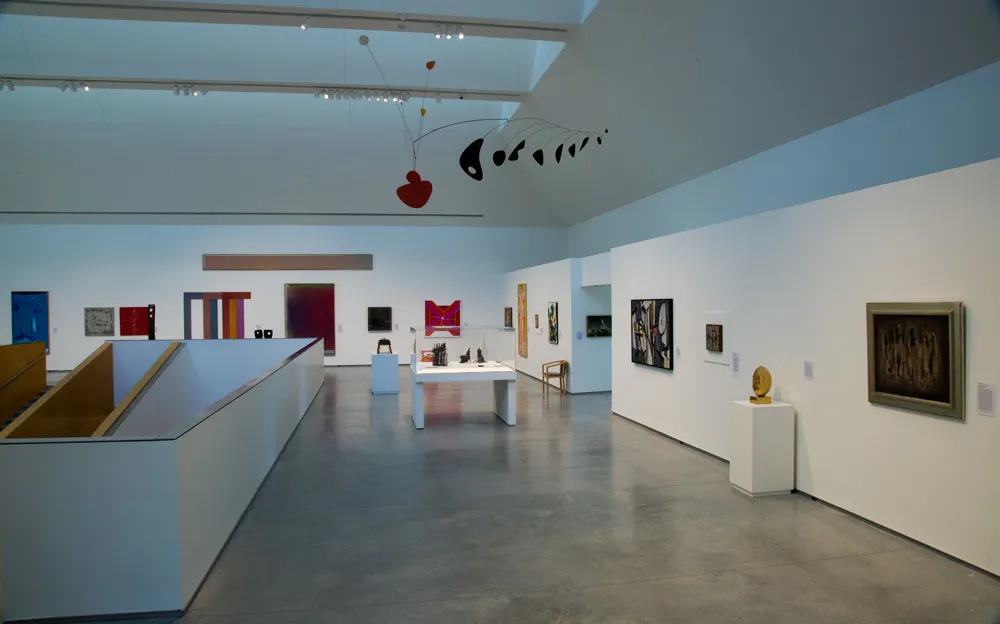
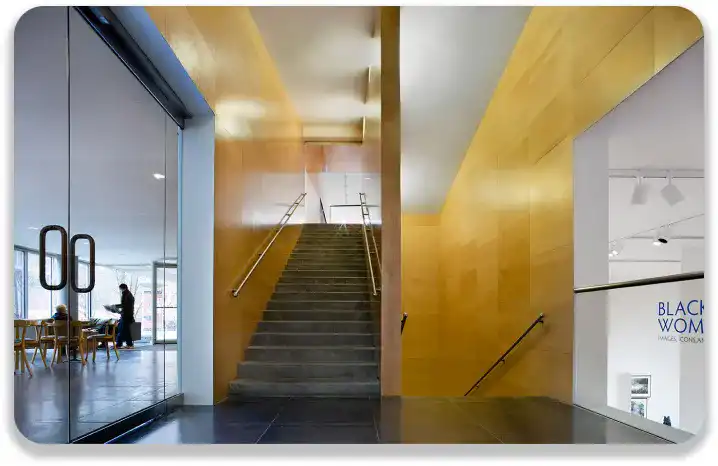

Un Sanctuaire de Créativité et d'Éducation


Diversité Artistique

En 1993, le Davis Museum au Wellesley College était une pièce maîtresse de l'art et de la culture, éblouissant les visiteurs par sa diversité artistique et son engagement à promouvoir la créativité et l'éducation. Niché au cœur du campus, ce musée offrait une expérience captivante aux étudiants, aux membres du corps professoral et aux amateurs d'art de la région.
Les galeries du Davis Museum étaient un kaléidoscope d'œuvres d'art, allant des trésors classiques aux expressions contemporaines les plus audacieuses. Les visiteurs pouvaient déambuler à travers des expositions dynamiques, contempler des peintures emblématiques, des sculptures saisissantes et des installations modernes, chacune racontant une histoire singulière et suscitant une réflexion profonde.
Une Source d'Inspiration
La richesse culturelle du musée se manifestait à travers sa programmation variée, proposant des expositions tournantes mettant en lumière des artistes locaux et internationaux, ainsi que des collections permanentes captivantes. Les conférences, ateliers et événements spéciaux enrichissaient davantage l'expérience, encourageant le dialogue et la compréhension de l'art sous différentes perspectives.
Au-delà de ses murs, le Davis Museum du Wellesley College était un catalyseur d'apprentissage, offrant aux étudiants l'opportunité d'explorer, d'analyser et d'apprécier les formes d'expression artistique. Il servait de laboratoire vivant, stimulant la curiosité intellectuelle et encourageant la créativité chez les étudiants qui trouvaient là une source d'inspiration inépuisable.